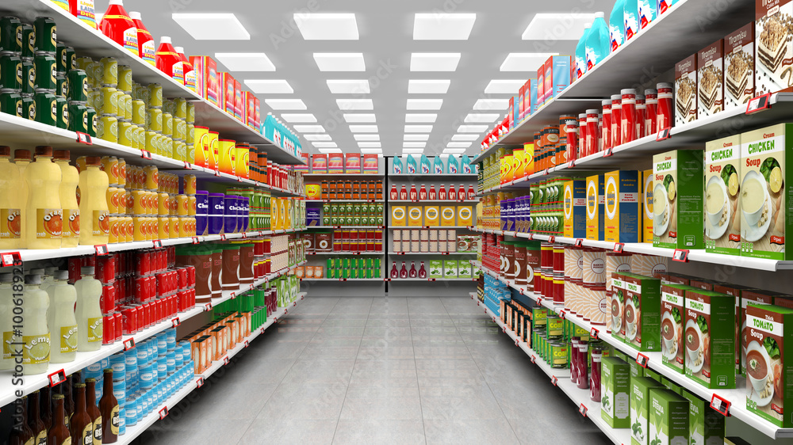
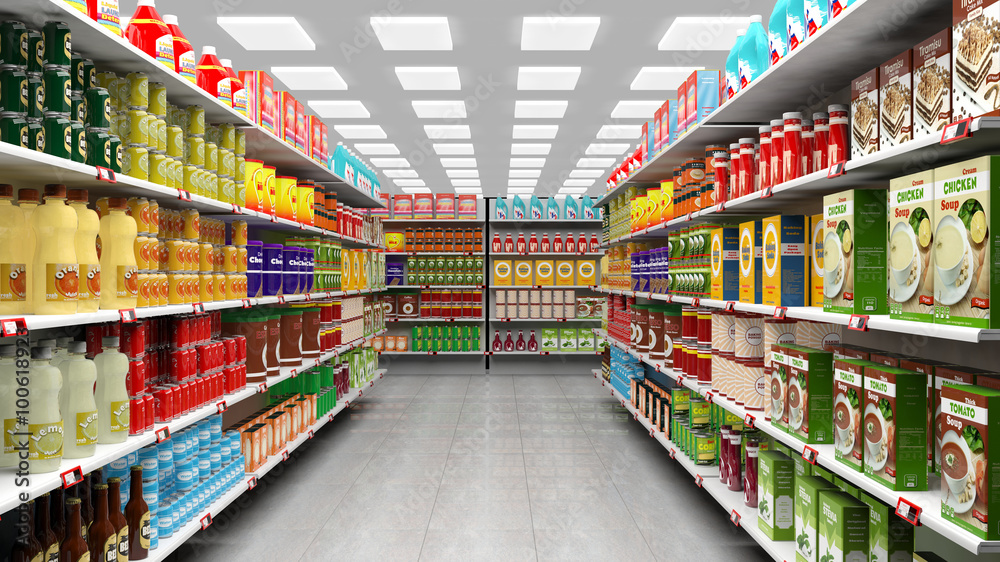
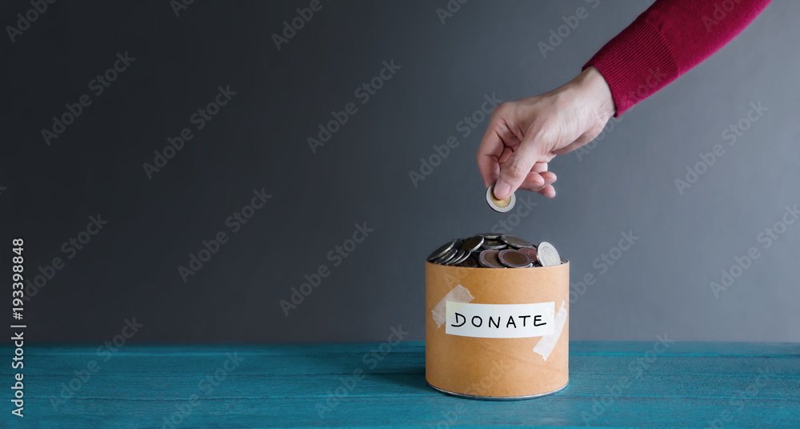

This project was particularly intriguing as it addressed the company's challenge
of attrition across multiple departments, directly impacting overall productivity. The outcomes of this initiative were significant,
leading to a notable reduction in attrition by 15%, decreasing from 16.36% to 13.906%. This project and analysis was done using Tableau
.
 

Our team was engaged by a client seeking a product comparison dashboard as part of
their expansion plans into new markets. They required insights into the performance
of their existing products to make informed decisions. Through our analysis, we
successfully evaluated their market performance, enabling them to focus resources on
top-performing products while phasing out underperforming ones. Consequently, we achieved
a noteworthy 12% reduction in running costs.

The leader of the fundraising committee tasked us with analyzing their donation data to
gain insights. The objective was clear: increase both the number of donors in their
database and the frequency of donations. Following thorough analysis, we pinpointed
regions with the highest donation contributions. This strategic approach allowed us to
customize targeted campaigns for these regions, resulting in a 5% boost in donation
frequency.
The management team of Redox Airline approached our team seeking assistance in optimizing their data management
processes, which were hindering effective decision-making and impeding business growth. Tasked with providing
crucial insights from their data to enhance competitiveness, our analysis revealed areas of significant financial
loss and areas of high profitability within the company. Armed with this knowledge, the company was able to
identify cost-saving opportunities, resulting in a notable 10% reduction in operating costs.